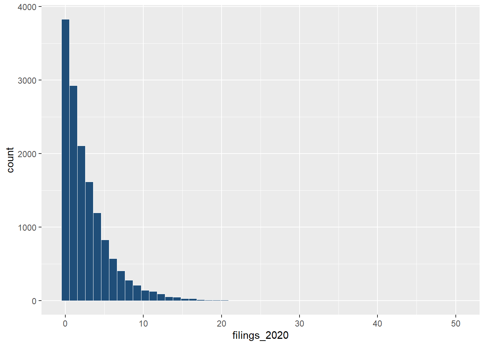

Philadelphia Eviction Forecasting Model
Predicting Tract-Level Eviction Risk for Targeted Rental Assistance
2026-04-28
The Policy Problem
Eviction filings are not evenly distributed across Philadelphia.
Limited rental assistance resources require a way to identify where preventive intervention may be most needed.
**This project asks whether eviction filing data can help identify high-risk census tracts before housing instability worsens.**
Research Question
Can recent eviction filing patterns help predict future eviction risk across Philadelphia census tracts?
We focus on three questions:
- Which tracts show persistent high filing activity?
- Does monthly or quarterly prediction work better?
- Can the model support rental assistance targeting?
Data and Study Design
| Component | Description |
|---|---|
| Outcome | Eviction filings |
| Geography | Philadelphia tracts |
| Period | Mar 2023–Mar 2026 |
| Predictors | Filing history, ACS housing variables |
| Task | Predict next month / quarter |
| Use | Target rental assistance |
Why Focus on March 2023–March 2026?
The model needs a stable policy environment.
- Pandemic-era filing patterns were highly disrupted.
- March 2023 onward shows more consistent monthly variation.
- This period better reflects current eviction risk.
- We use this period to train a more comparable forecasting model.
Eviction Filings Are Highly Skewed

What This Distribution Means
- Most tract-months have zero or very low filings.
- A small number of observations have much higher filing counts.
- This distribution supports using count-based models and high-risk classification.
Spatial Patterns of Eviction Risk

What the Spatial Pattern Shows
- Eviction burden is not evenly distributed across Philadelphia.
- Raw filing counts show where total eviction activity is highest.
- Renter-adjusted rates show where eviction risk is most concentrated.
- Tracts high on both measures are stronger candidates for rental assistance targeting.
Eviction Risk and Neighborhood Demographics
| Tract racial majority | Avg. monthly filings |
|---|---|
| Black | 3.80 |
| Hispanic | 2.63 |
| Other | 2.60 |
| White | 1.70 |
Structural Housing Inequality
- Black-majority tracts show higher average eviction filing levels.
- Hispanic-majority and other-majority tracts also show higher filings than white-majority tracts.
- These patterns suggest eviction risk reflects broader structural disparities in housing stability.
- Model outputs should be interpreted with equity safeguards.
Modeling Strategy
We test whether recent filing history can predict future tract-level eviction risk.
- Monthly model: predicts next-month eviction filings.
- Quarterly model: predicts next-quarter eviction filings.
- Key predictors: lagged filings, rolling averages, historical baselines, and ACS housing variables.
- Evaluation: prediction error, tract ranking, and high-risk classification.
Monthly vs. Quarterly Forecasting
We compare two forecasting scales because they serve different policy needs.
Monthly
- Shorter intervention window
- More sensitive to recent changes
- Better for rapid outreach
- More month-to-month noise
Quarterly
- Smoother filing patterns
- Better for broader planning
- Less reactive to sudden spikes
- Longer delay before intervention
From Data to Policy Targeting
- Use recent eviction filing history.
- Add tract-level housing conditions.
- Predict future filing risk.
- Identify elevated-risk census tracts.
- Support rental assistance targeting.
Model Performance Summary
| Model | Scale | Test MAE | Test RMSE | Corr. |
|---|---|---|---|---|
| Rolling baseline | Monthly | 1.657 | 2.441 | 0.678 |
| Baseline | Quarterly | 3.718 | 5.422 | 0.779 |
Model Performance Summary
- Recent filing history is highly predictive.
- Simple temporal baselines perform better than more complex models.
- Adding more structural covariates does not always improve out-of-sample accuracy.
- Monthly prediction is more useful for short-term intervention planning.
Why Monthly Forecasting Is More Useful for Targeting
- Rental assistance is often time-sensitive.
- Monthly forecasts identify risk closer to when filings may occur.
- Recent filing history and rolling averages capture short-term persistence.
- This makes monthly prediction better suited for early outreach and prevention.
Monthly Model Diagnostics

The Model Captures Patterns but Misses Extremes
- Predictions follow the general tract-level pattern.
- The model compresses the upper tail of high-filing tracts.
- Extreme filing spikes remain difficult to predict.
- This supports using the model as a screening tool, not an automatic decision rule.
Quarterly Model Diagnostics

Quarterly Model Trade off
Quarterly aggregation smooths short-term noise, but it can hide sudden tract-level changes.
- Quarterly predictions are less sensitive to monthly volatility.
- This can help with general planning.
- But the model struggles with extreme high-filing tracts.
- For targeted rental assistance, this delay can be costly.
Policy Application
The model is most useful as an early-warning and prioritization tool.
- Identify tracts with elevated predicted filing risk.
- Prioritize outreach before filings escalate.
- Support rental assistance targeting at the neighborhood level.
- Combine model output with local knowledge and equity review.
The model should support policy judgment, not replace it.
Key Takeaways
- Eviction filings in Philadelphia are spatially concentrated and structurally uneven.
- Recent filing history is the strongest short-term predictor of future filings.
- Forecasting models can help target rental assistance, but should be used with equity checks and policy judgment.
Conclusion
Eviction risk is predictable enough to support early intervention, but not predictable enough to automate policy decisions.
A short-term forecasting model can help Philadelphia identify elevated-risk tracts and prioritize rental assistance outreach.
Its strongest use is not replacing human judgment, but making policy response faster, more targeted, and more transparent.
Thank You！
Questions and Discussion ？
Daisy, Gab, Johnny, Yiting
CPLN 5920 | Philadelphia Eviction Forecasting Model